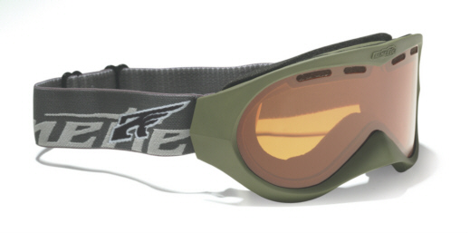

Arnette A4
59,95 €
ARNETTE A4 Black Der schmale Rahmen und
die schnittige Optik machen die A4 zu einer idealen
Goggle für warme Sonnentage. Das Ventilations-
und Luftzirkulationssystem verhindern ein Schwitzen
und ein Beschlagen. - Robuster Thermoplastik
Rahmen - 3fach gepresster Schaum, für perfekten
Sitz - Elastisches Band mit Clip - Rahmenform ideal
für schmale Gesichter - Polycarbonat Gläser mit
Ventilationsöffnungen - Anti-Beschlagfunktion der
Gläser - Ideal für Helme
Zurück zur Angebotsseite